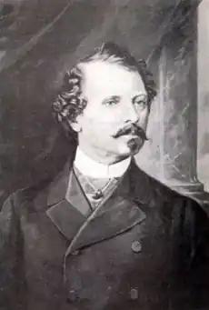
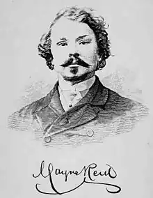

РІД, Томас МАЙН (Reid, Thomas Mayne — 04.04.1818, Балліроні, Ірландія — 22.10. 1883, Лондон) — англо-американський письменник. Батько і дід Ріда були священиками. Всупереч батьковій волі Томас відмовився від традиційної для родини професії і наприкінці 30-х pp., коли йому виповнилося двадцять, подався в Америку.
У Новому Світі юнак сподівався розбагатіти, проте його спонукали до мандрів і пристрасть до пригод, і прагнення побачити країну, яка на той час багатьом здавалася бастіоном ідей демократії та свободи. Життя Ріда було не менш захоплюючим, аніж його книги. В Америці він спробував безліч професій: торгував, віршував, учителював у аристократичній родині, був мисливцем, репортером, редактором газети, клерком провіантної контори і навіть наглядачем на плантаціях (утім, від цієї останньої посади він відмовився, не бажаючи шмагати рабів). У 1843 р. Рід узяв участь у торговій експедиції річками Платт і Міссурі. Саме тоді він вперше побачив американський Захід, краще познайомився з життям індіанців. Восени того ж таки року, перебуваючи у Філадельфії, Рід зустрівся з Е. А. По і заприязнився з ним. Згодом, після смерті По, він захищав великого романтика від наклепницьких зазіхань критики.
У 1847 р. почалася війна США з Мексикою. Рід добровільно вступив до лав американської армії. За хоробрість він отримав звання старшого лейтенанта, а невдовзі став капітаном (згодом йому подобалося називати себе "капітаном Майн Рідом"). У вересні 1847 p., під час штурму фортеці Чапультепек, Рід був важко поранений у стегно. Він лікувався у штаті Огайо, в гостинній домівці свого приятеля, і саме тоді написав свій перший роман "Вільні стрільці" ("The Rifle Rangers"), що вийшов друком в Англії у 1850 р. У 1849 p., довідавшись про бурхливі події у Європі, Рід разом із гуртом друзів залишив Америку, щоб узяти участь у баварській та угорській революціях, проте їхній корабель прибув у Ліверпуль надто пізно, коли повстання вже були придушені. Рідприсвятив революційним подіям роман "Дружина-дитина" ("The Child Wife"), героєм якого став ірландський революціонер Мейнард. Написаний у середині 50-х pp., цей роман побачив світ уже після смерті автора, у 1885 р. Відтак, відвідавши родину в Ірландії, Рід подався у Лондон. Тут він познайомився з аристократичною сім'єю Хайдів і невдовзі, у 1853 p., одружився з їхньою донькою Елізабет. У цей період Рід зажив слави людини екстравагантної і романтично налаштованої. Він дефілював вулицями Лондона у мексиканському костюмі, у сомбреро, а власний будинок побудував на кшталт мексиканської гасієнди. Щоправда, лондонський бомонд поставився до Ріда вельми непривітно. Його республіканські переконання, глузування над самодержавною російською монархією, критика політики британського уряду дратували багатьох можновладців. Ріду не вдалося заснувати у Лондоні власний журнал, редакції газет відмовлялися з ним співпрацювати. Будучи непрактичною людиною, Рід опинився на межі банкрутства. Зрештою, у жовтні 1867 р. письменник знову вирушив до Америки. Проте й у США його чекало розчарування. Заснований Р. журнал "Вперед" ("Onward") не здобув широкого визнання і невдовзі його довелося закрити. Загострилася хвороба, викликана пораненням, і в 1870 р. він повернувся до Англії. Протягом останніх років життя письменникові довелося боротися зі злиднями та хворобами. Він помер у Лондоні у 1883 р. Розквіт творчості Ріда припадає на 1850—60 pp. Саме у цей період він написав свої найвідоміші романи: "Білий вождь" ("The White Chief", 1855), "Квартеронка" ("The Quadroon", 1856), "Оцеола", "Вершник без голови" ("The Headless Horseman", 1865). P. плідно продовжив традиції Д. Дефо та Дж.Ф. Купера, поєднуючи у своїй творчості риси роману мандрів і пригодницького роману. Письменник прагнув синтезувати у своїх романах розважальні та повчальні елементи. У тогочасній Великобританії, яка була могутньою колоніальною і морською державою, велику популярність здобули книги про життя Африки, Індії, Америки. То був період географічних відкриттів та експедицій, результатами яких завжди жваво цікавився Рід. Зрештою, життя самого Ріда — невтомного мандрівника — стало цінним матеріалом для його творчості. Особисті спостереження письменник доповнював відомостями, запозиченими з документальних джерел, відтак бездоганність його описів флори та фауни екзотичних країн визнавали навіть географи. Описи природи відіграють у романах Ріда особливу роль. Письменник нерідко робить перерву у найнапруженішу мить розповіді, щоби розказати про невідому європейському читачеві тварину або рослину. Взаємини людини зі світом природи, пізнання цього світу та боротьба з ним під пером Ріда набуває рис захопливої пригоди, стає важливою ланкою у розвитку сюжету (варто згадати хоча б епізод урятування Віргінії від алігатора в "Оцеолі" чи втечу Луїзи та Моріса від диких мустангів у "Вершнику без голови"). Іноді Рід взагалі відмовляється від традиційної романної інтриги, висуваючи на передній план суто просвітницькі завдання. Так, зміст невеликої дилогії "Полювання на рослин" ("The Plant Hunters", 1857) та "Скелелази" ("The Cliff Clim-bers", 1864) складають епізоди, у яких ідеться про знайомство двох мандрівників Каспара і Карла з багатою флорою та фауною Індії. Разом з героями читач дізнається про особливості поведінки екзотичних тварин: биків чоурі, гірського цапа, губатого ведмедя, про властивості соку пальміри чи горіха поуні. У романах Ріда провідну роль відіграють не характери, а події. Його герої потерпають від зрадливої долі, потрапляють у залежність від випадкового збігу обставин, змушені долати несподівані перешкоди. Персонажі Ріда є доволі умовними, вони не наділені глибокими психологічними характеристиками. Позитивні герої вирізняються винятковою шляхетністю, вони здатні бути відданими друзями і палкими коханцями, і їхня приваблива зовнішність є віддзеркаленням їхньої внутрішньої сутності. Натомість їхні антагоністи — люди ниці, підлі, зажерливі, а нерідко ще й бридкі зовні. Проте саме герої, створені Рідом, стали запорукою популярності його романів. Незламні у злигоднях, мужні та справедливі, вони завжди прагнуть до перемоги добра над злом і покликані стати життєвим прикладом для юних читачів Ріда. Своєрідність пригодницького роману Ріда полягає в тому, що гостросюжетність письменник поєднує з важливими проблемами сучасності. Так, у "Квартеронці" головною перешкодою на шляху героїв до щастя стає рабство Аврори Автор, вдаючись до яскравих деталей, обґрунтував думку про ганебність і антигуманність рабства. Читач стає свідком жорстоких тортур, яких зазнають невільники, переслідування рабів-утікачів за допомогою спеціально натренованих собак, продажу рабів з аукціону. Лише несподіваний збіг обставин, своєчасна допомога закоханого в Аврору Едварда та її колишньої господині Ежені Безансон рятують героїню від зазіхань підступного негідника Домініка Гайара. котрий купив її на аукціоні. Рід не був активним прихильником аболіціонізму, вважаючи, що рух за скасування рабства в Америці призводить лише до посилення ворожнечі між Північчю та Півднем, проте картина рабства, створена у "Квартеронці", пафос обурення письменника дає підстави зарахувати цей роман до творів аболіціоністської літератури, поряд із "Хатиною дядька Тома" Г. Бічер-Стоу. В "Оцеолі, вожді семінолів" ("Oceola, the Seminole", 1858) P. аналізує проблеми американської політики у ставленні до індіанців, перегукуючись, таким чином, з пенталогією про Шкіряну Панчоху Купера. Сюжет "Оцеоли" пов'язаний з історичними подіями 30-х pp. XIX ст., коли американський уряд ужив заходів для остаточного викорінення індіанського племені семінолів з території Флориди, що призвело до війни із семінолами. У романі розповідь про ці події ведеться від імені сина плантатора Джорджа Рендольфа. Після закінчення військового училища у Вест-Пойнті він змушений брати участь у війні з індіанцями, проте дії "блідолицих загарбників" обурюють героя. Рендольф, як і сам Рід, симпатизує семінолам. Не випадково прибічники дій американського уряду — агент Томпсон, ад'ютант Скотт, молодий плантатор Рінтгольд та його друзі Спенс і Вільямс — змальовані у вкрай негативних барвах. Одним із найяскравіших образів роману є вождь племені семінолів Оцеола. Автор щиро захоплюється своїм героєм, підкреслюючи його шляхетність, мужність, безкорисливість, відданість рідному народові. Рід, без сумніву, ідеалізує історичну постать Оцеоли: у вождя витончені манери, патетична мова, він ладен ризикувати життям, щоби прийти на допомогу своєму білому другові Джорджу Рендольфу. Таке трактування образу пояснюється намаганням письменника спростувати наклепницьку писанину американської преси, спрямовану проти індіанців та їхніх вождів. Захоплений американцями у полон, Оцеола помирає у неволі, але союз сестри Оцеоли Марії і Джорджа Рендольфа наприкінці роману символізує мрію Р. про об'єднання всіх людей, незалежно від їхнього расового походження. Тип пригодницького роману, створений Рідом, набув розвитку у творчості Брет Гарта, Р.Л. Стівенсона, Г.Р. Хагтарда, Дж. Конрада. Ріда можна також вважати одним із фундаторів детективного жанру. Його роман "Вершник без голови", поряд із новелами По, справив помітний вплив на творчість В. Коллінза та А. Конан Дойля. Дія роману відбувається у Техасі, після закінчення війни США з Мексикою. Письменник відтворює тривожну атмосферу повоєнного Техасу (території, через яку вибухнула війна), недовірливе ставлення людей одне до одного. Конфлікт ґрунтується на суперництві двох героїв — Моріса-мустангера і капітана Кассія Колхауна, закоханих у доньку плантатора, красуню Луїзу Пойндекстер. Як і в інших творах P., це конфлікт шляхетності і підлості, добра і зла. Кассій — ниций і підступний, натомість Моріс — щирий, безкорисливий і хоробрий. Зав'язкою карколомного сюжету стає криваве вбивство Генрі Пойндекстера, брата Луїзи. У скоєнні цього злочину підозрюють Моріса, але його відданий друг — старий мисливець Зебулон Стамп — ретельно розслідує цю справу і, врешті, викриває справжнього вбивцю — Кассія Колхауна. Автор постійно тримає читача у напруженні. Поступово перед нашими очима з'являються нові докази, і ми разом з героями роману просуваємося до розкриття таємниці загадкового вершника без голови. Створюючи гостросюжетну розповідь, Рід, проте, не забував і про свої освітні завдання. Перед читачами постає широка панорама прерії, автор розповідає про норови її мешканців: диких мустангів, койотів, грифів, створює вражаючу картину смерті. Романи 70-80-х pp. вирізняються домінуванням авантюрних мотивів: "Смертельний постріл" (1873), "Сигнал біди" ("The Flag of Distress", 1876), "Загублена гора" ("The Lost Mountain", 1883). З-поміж пізніх творів Ріда слід виокремити роман "Напівкровка" ("The Half Blood", 1875), у якому знову звучать мотиви боротьби індіанських племен.